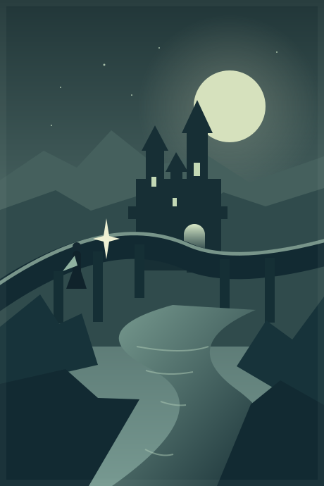

The city is quiet.
Ari reaches the bridge before dawn.
A STUDIO FOR WEBTOON CREATORS
Bring your art, characters, and ideas together. A focused space to make the next chapter.
Download for Windows
LESS IN THE WAY. MORE ON THE PAGE.
Simple at first.
More when you need it.
SCRIPT · CHAPTER 01
Ari reaches the bridge before dawn.
Someone is already waiting.
The returning messenger
The DawnkeepersHome above the clouds
The DawnkeepersA shared identity.
Characters, places, and references connected through Groups.
BEFORE THE FALL
CHAPTER 03A memory that changes everything.
THREE YEARS LATER
CHAPTER 01The messenger returns to the citadel.
THE NEXT MORNING
CHAPTER 02A new path opens beyond the bridge.
Arrange the chronology. Keep your reading order.
Original images stay intact. Select, crop, blend edges, and reuse assets across your canvas.
Character sheets, locations, group references, and a story style you can copy into your image generator.
Script beside the artwork. Shared bubble presets. Vertical chapters ready for export.
YOUR NEXT CHAPTER STARTS HERE
Free for everyone. No account, ads, or subscription.
Yes. The complete desktop app is free to download and use. There are no ads, required accounts, or bundled offers.
Scroll Studio works beside your image generator. Import your artwork, organize references, copy consistent prompts, and assemble the chapter here.
The desktop app saves on your computer. The browser Assets editor uses a private temporary workspace; export .scro to keep your edits. Characters, locations, lore, chapters, and original images travel together in that file.
This download is for Windows 10 and 11, 64-bit. The installer is currently unsigned. Use the Assets editor in your browser on mobile, tablet, or desktop. Native macOS, Android, and iOS builds are not available.